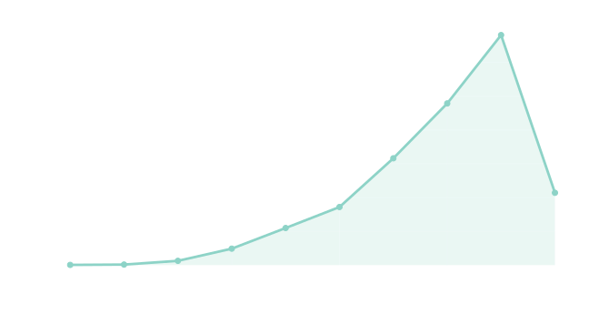
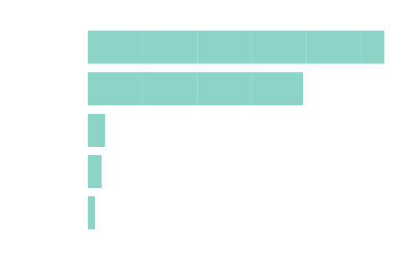
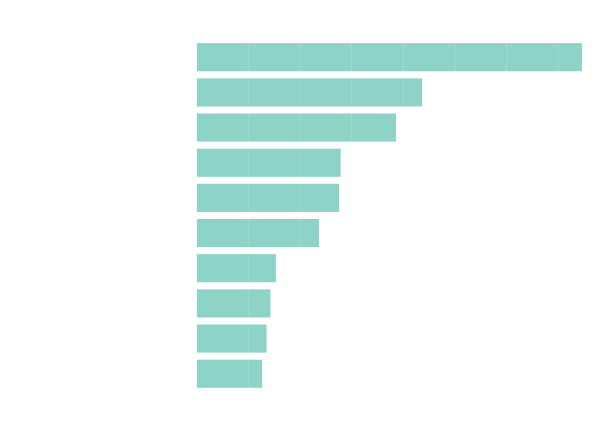

Qué muestra este sitio
Este atlas web toma el nuevo CSV de Scopus y el JSON exportado por VOSviewer para convertir la revisión NTN en una experiencia de exploración interactiva. Aquí el foco no es solo leer resultados, sino navegar por ellos.
Blog académico-digital · NTN · VOSviewer · GitHub Pages

Vista general
Este atlas web toma el nuevo CSV de Scopus y el JSON exportado por VOSviewer para convertir la revisión NTN en una experiencia de exploración interactiva. Aquí el foco no es solo leer resultados, sino navegar por ellos.



Integrantes
El trabajo integra exploración bibliométrica, lectura técnica, visualización de resultados y una transferencia aplicada al mini-caso NTN. Todas las secciones del sitio fueron organizadas para mostrar el proceso de forma clara, navegable y visual.
Proceso
Visualización interactiva
Síntesis temática
Relaciones destacadas
Aplicación técnica
Aprendizaje
Rigor académico